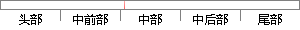

这种方法即能提高CPU的利用率，同时又加快了程序的执行速度。
片段位置图

相似结果
相似片段：对于这种方法还有一种常用的简化形式,即不需要表示线...最大程度的提高CPU的利用率,减少内存的占用和冗余...中,极大的提高了CPU的利用率,加快了程序的执行速度...
| 标题 | 《虚拟分形场景及双视场三维漫游系统的研究与实现》 |
| 对比库 | 中国学位论文全文数据库 |
| 作者 | 程磊 |
| 机构 | 东北大学 |
| 分类 | 计算机应用技术 |
| 年份 | 2006 |
| 相似率 | 70.83% （轻度抄袭） |
※ 片段修改建议 ※
近似词参考：- 这种：这类
- 方法：方式 要领 法子
- 执行：履行 实行
- 快了：观望
- 速度：速率
- 提高：进步
- 程序：法式 步伐
系统自动生成语句：这类方式即能进步CPU的利用率，同时又加观望法式的履行速率。
注：本片段修改建议为系统自动生成，仅供参考。